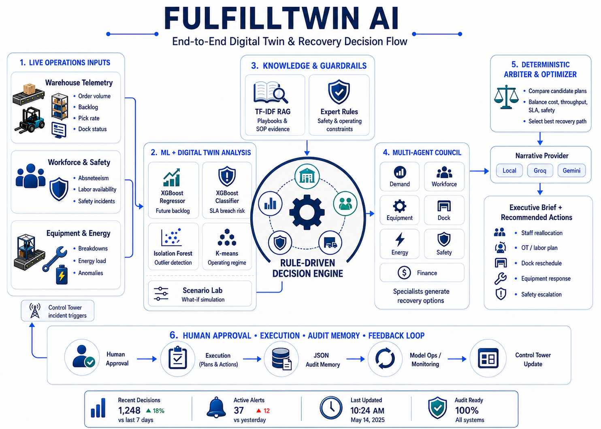

Fragmented signals
Operational data often sits across disconnected warehouse, labor, equipment, dock, and safety systems.
A production-oriented portfolio capstone that simulates fulfillment-center disruptions, estimates operational impact with traditional machine learning, and coordinates a governed multi-agent recovery workflow.
Transparent portfolio disclosure: the bundled demonstration models train on synthetic fulfillment scenarios. The architecture is designed for future integration with site-specific WMS, labor, equipment, dock, safety, and energy data.
Demand, workforce, equipment, dock, energy, safety, and finance.
Regression, classification, clustering, and anomaly detection.
Compares candidate plans using cost, throughput, and safety constraints.
Material interventions remain advisory until a manager approves them.
Business problem
A demand surge, conveyor failure, labor shortage, dock constraint, or safety event can rapidly increase backlog and late-shipment risk. Managers must compare recovery actions while balancing throughput, overtime, equipment limits, cost, and worker safety.
Operational data often sits across disconnected warehouse, labor, equipment, dock, and safety systems.
The fastest response is not always the safest or most economical response.
An LLM alone should not calculate warehouse physics, approve overtime, or override operating constraints.
Solution
FulfillTwin AI combines a simulated control tower, a digital-twin scenario laboratory, traditional machine learning, local policy retrieval, specialist agents, deterministic plan scoring, and human approval.
Generates representative event streams for portfolio demonstration and provides a control-tower pattern ready for production data connectors.
Maps events such as demand surges, labor shortages, and equipment failures into controlled digital-twin scenarios.
Estimates future backlog and SLA-breach risk, identifies the operating regime, and flags unusual states.
Specialist agents independently assess demand, labor, equipment, docks, energy, safety, and financial impact.
Scores candidate plans using explicit cost, backlog reduction, throughput, overtime, and safety constraints.
Writes scenarios, forecasts, recommendations, and approvals to an atomic, thread-safe JSON decision store.
Project evidence
This section separates working technical components from future production validation so employers can evaluate the project accurately.
Current: synthetic fulfillment scenarios generated at startup.
Implemented: a mixed traditional-ML pipeline.
Available in Model Ops: demonstration metrics, model information, retraining controls, and decision-memory inspection.
Synthetic-model results are engineering evidence, not claims of live warehouse accuracy.
Required next: replace the synthetic generator with site-specific historical events, define operational baselines, retrain, validate by facility, and move audit records to persistent production storage.
Technical differentiation
The LLM is an optional communication layer. The operational recommendation is grounded in traditional ML outputs, deterministic rules, local retrieval, and transparent plan scoring.
| Capability | Implementation | Role in the decision |
|---|---|---|
| Future backlog estimate | XGBoost regressor | Produces the numerical backlog forecast used by agents and plan scoring. |
| SLA-breach risk | XGBoost classifier | Estimates late-shipment risk for the simulated operating state. |
| Operating regime | K-means clustering | Groups the scenario into an interpretable operating pattern. |
| Out-of-distribution warning | Isolation Forest | Flags scenarios that differ substantially from the training distribution. |
| Safety and operating constraints | Deterministic expert system | Blocks or flags actions that violate encoded guardrails. |
| Policy evidence | Local TF-IDF RAG over playbooks | Retrieves relevant guidance without making the LLM the source of truth. |
| Recovery-plan selection | Transparent deterministic arbiter | Compares candidate interventions using explicit costs and operational effects. |
| Executive explanation | Local, Groq, or Gemini provider | Turns the already-selected plan into a manager-readable brief. |
Worked demonstration
A representative Scenario Lab run shows how the system moves from model outputs to a governed recovery recommendation.
The digital twin estimated a severe backlog and full SLA-breach risk. The agent council generated alternatives, and the deterministic arbiter selected the lowest-scored viable plan under the configured rules.
Selected actions in the displayed run included moving 15 associates, authorizing 4 overtime hours, applying a 22% release throttle, and requiring human approval before execution. These values illustrate system behavior; they are not production performance guarantees.
Decision flow
Simulated or future site-integrated warehouse signals.
Backlog, SLA risk, anomaly, and operating-regime outputs.
Guardrails, policy evidence, and specialist assessments.
Transparent comparison of cost, safety, and recovery impact.
Manager control, executive brief, and recorded decision history.

End-to-end architecture linking operational inputs, traditional ML, expert guardrails, local retrieval, the seven-agent council, deterministic optimization, human approval, and the control-tower feedback loop.
Engineering stack
Streamlit multipage UI, Flask JSON API, health endpoint, Docker startup, and Railway deployment configuration.
XGBoost, scikit-learn, local expert rules, TF-IDF retrieval, seven specialist agents, and optional Groq or Gemini narratives.
Human-in-the-loop approval, atomic JSON decision memory, local fallback behavior, model operations, and test coverage.
Responsible deployment
FulfillTwin AI does not authorize material interventions on its own. Overtime, major labor reassignment, and high-risk recovery actions remain subject to explicit human review.
Encoded rules check capacity, safety, and operating constraints before a narrative is produced.
If an external LLM provider is unavailable, the application can return a deterministic local brief.
The application records the scenario, model outputs, candidate plans, final recommendation, and approval state.
Production hardening would include authenticated roles, persistent database or object storage, facility-specific validation, monitoring and drift detection, secrets management, incident-retention policies, and integration testing against real source systems.